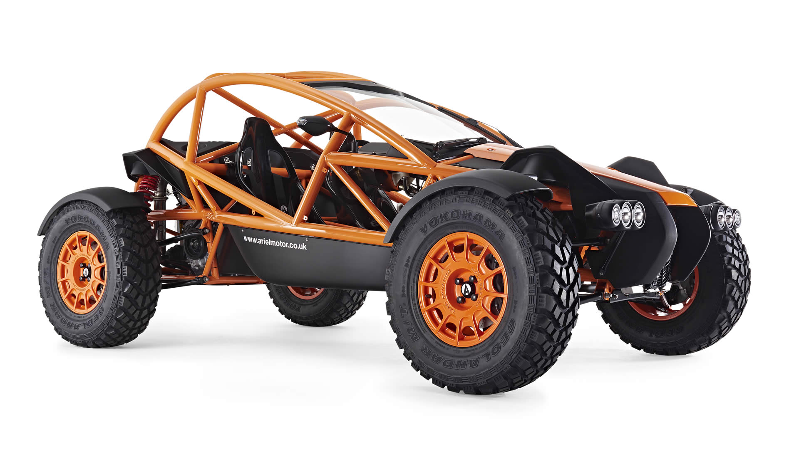
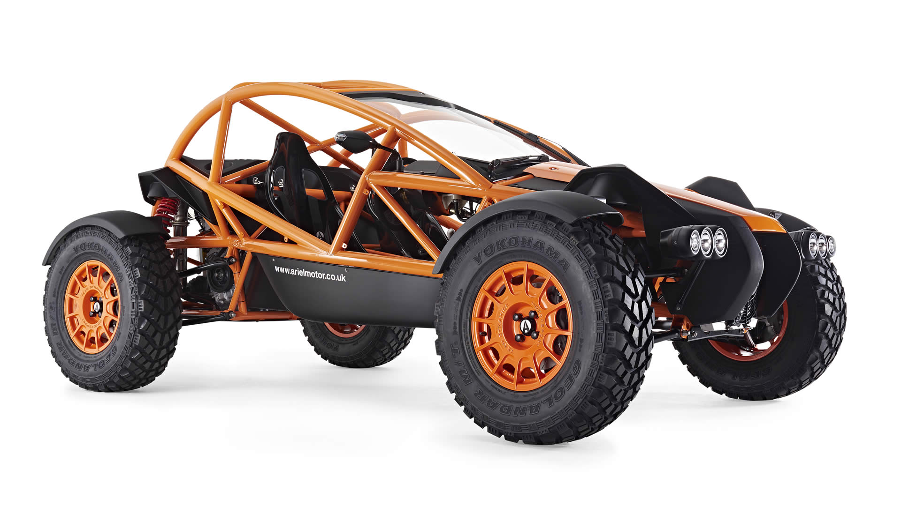
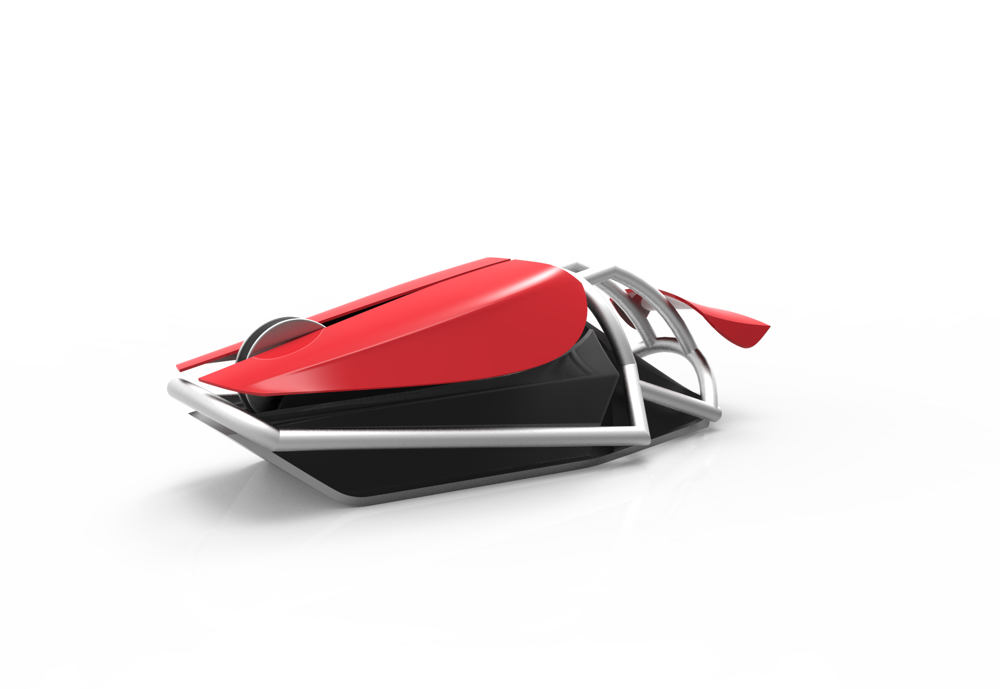
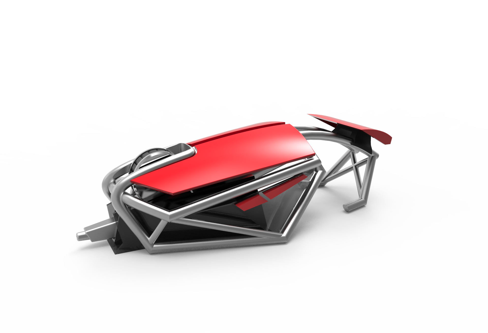
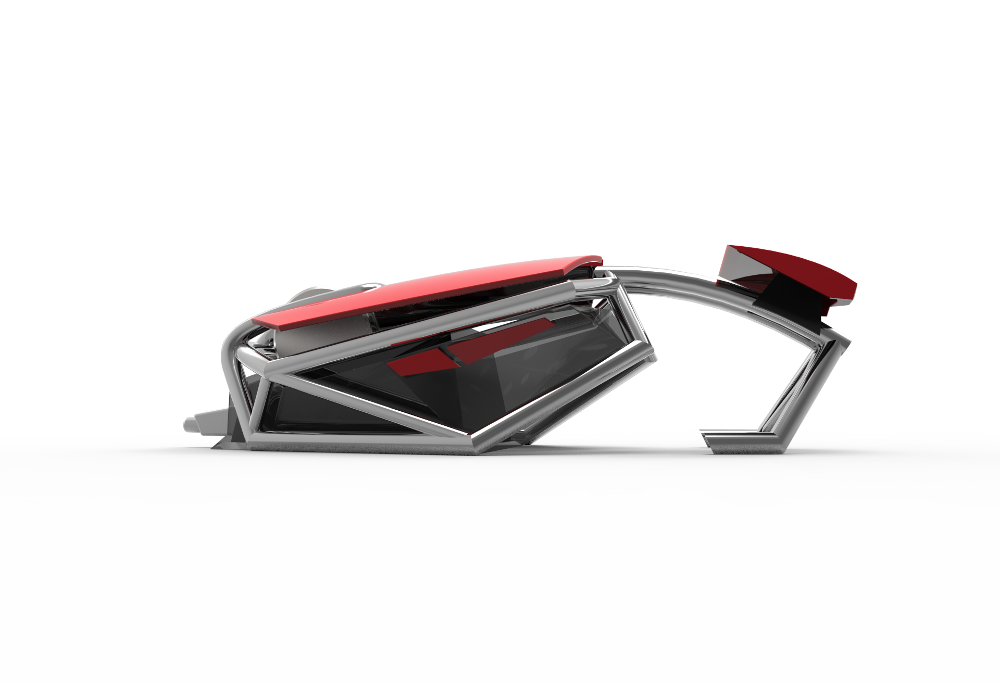
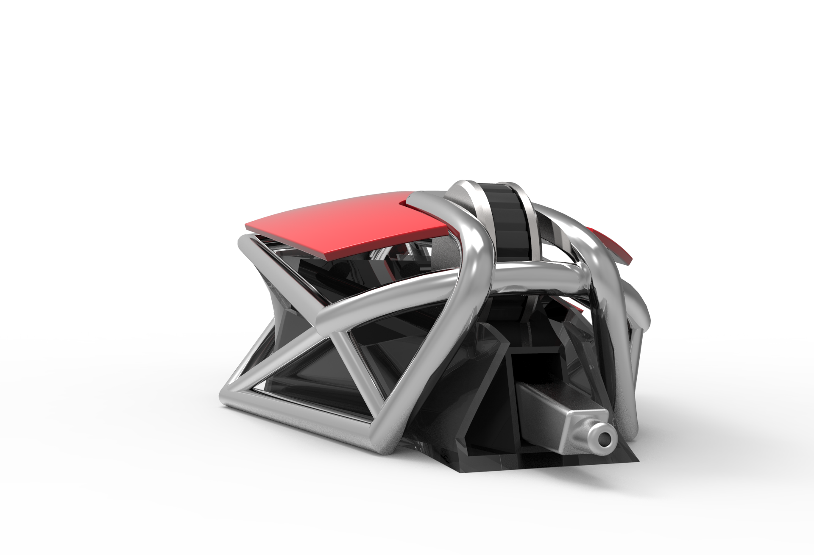
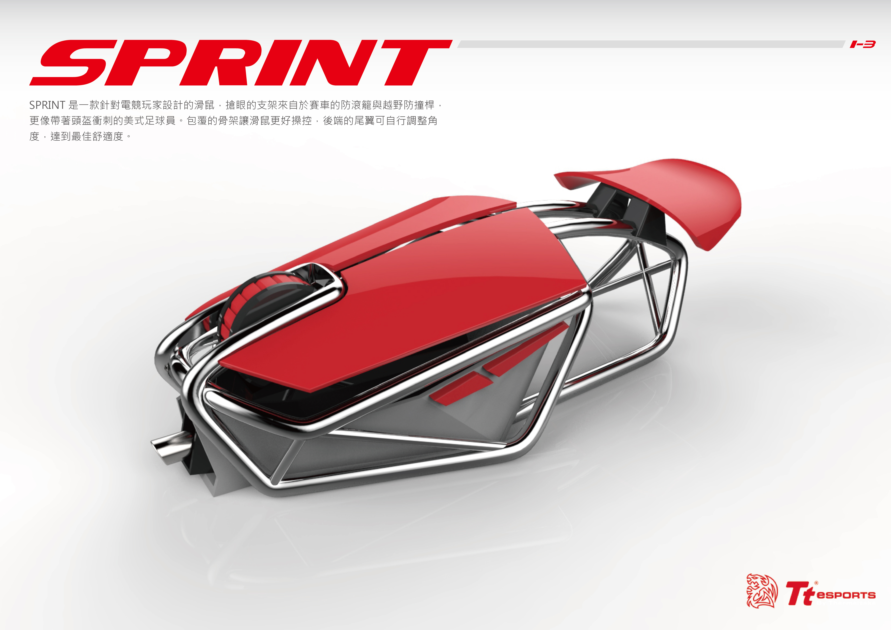
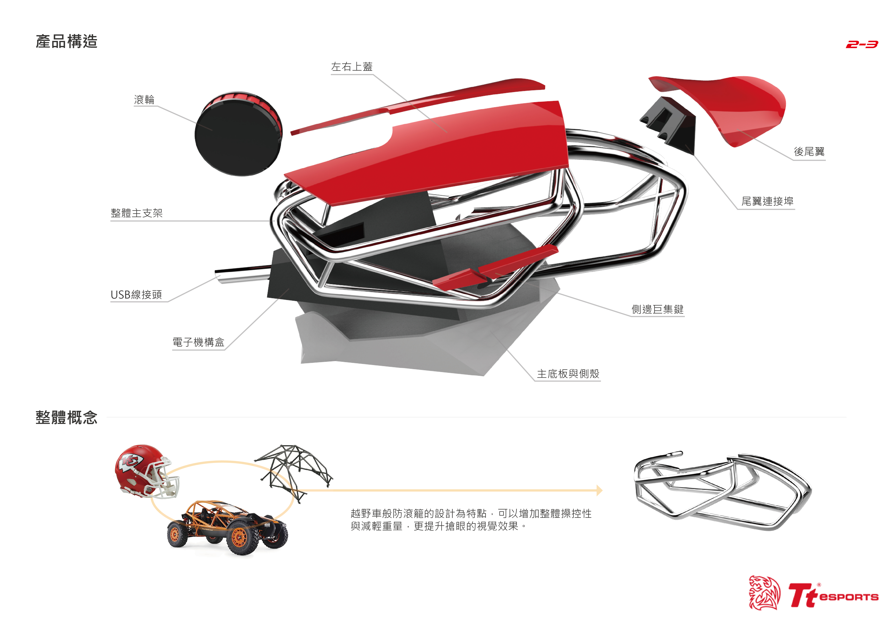
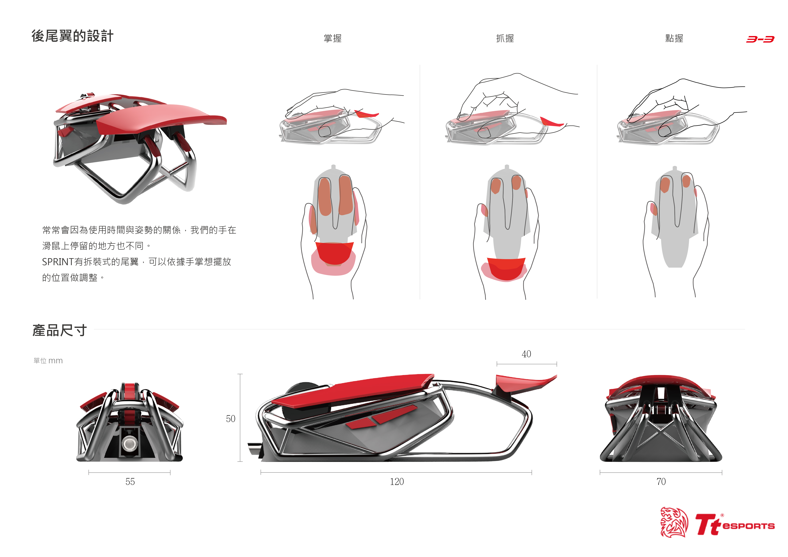

2016 3月21號星期一 滑鼠設計第一堂
學校教授認為用滑鼠比賽當課程是個好主意(才怪)這是比賽網站的連結
因此這學期第一個案子就是設計電競滑鼠
第一階段 概念的確立

 

我想利用美式足球面罩與賽車防滾龍的概念，做為滑鼠的設計元素
2016 3月28號星期一 滑鼠設計第2堂
此為第一版滑鼠設計
經過初次與老師的討論，決定要改善一些地方
- 滑鼠的骨架重點必須放大
- 整體的形狀太過尖銳，要圓潤化
老師瞇著眼對我說:亨亨，修改後，下堂課再拿來檢討!
2016 4月4號星期一 滑鼠設計第3堂
這是一個漫長的春假，既然是春假，想當然就沒有上課，可想而知我的腦袋什麼都沒再想滑鼠的任何鳥事~
2016 4月11號星期一 滑鼠設計第4堂
這次算是有大改，我把滑鼠的型跟骨架都狠狠的調了一遍，吃了一百顆的口香糖跟睡了加起來不到成年人完整一天所需睡眠的可憐時數
  再次的討論與整裡
- 骨架太過堅硬，邊角都太銳利，要讓轉接點圓弧化
- 尾翼太突兀，必須要讓尾翼與整體滑鼠風格一至
- 滑鼠頭的區域可以再簡化，符合整體感
好阿，你說什麼我就改阿，反正不吃虧啊，改阿，就改阿 直接做表版了呀
於是，我開始做最終版
  好啦!我不想改了，我覺得我很棒，哈哈哈哈哈哈，反正都上傳了是想怎樣呢 有就有沒有就沒有囉